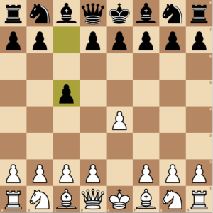

Ruy-Lopez
The Spanish Opening, a classical and highly respected opening in chess.

Sicilian Defense
A highly aggressive response to 1.e4, offering black many counterplay opportunities.
Queen's Gambit
A strong opening for white that focuses on controlling the center early.
King's Indian Defense
A hypermodern opening for black, emphasizing control of the center from afar.
Caro Kann Defense
A solid and reliable defense against 1.e4, offering long-term stability.
French Defense
A strategic defense against 1.e4, focusing on pawn structure and counterplay.